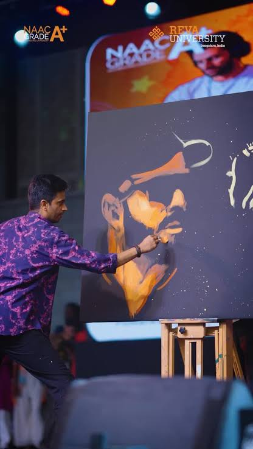

Shading brings depth and realism to every sketch. Vilas Nayak uses different grades of graphite pencils along with blending tools to create smooth transitions between light and dark areas. His shading techniques give each portrait a three-dimensional appearance.
⬅ Previous Next ➜